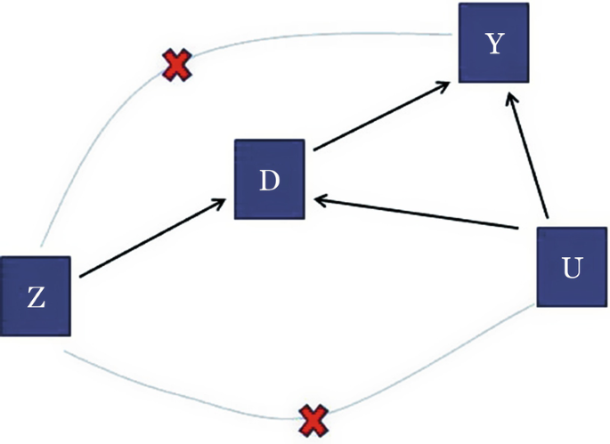
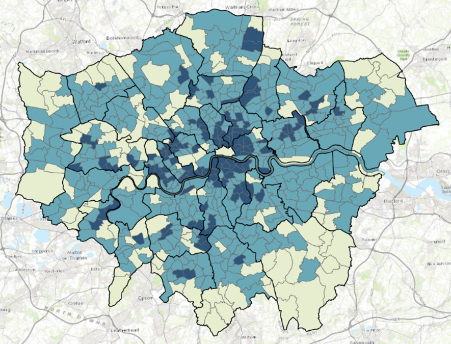
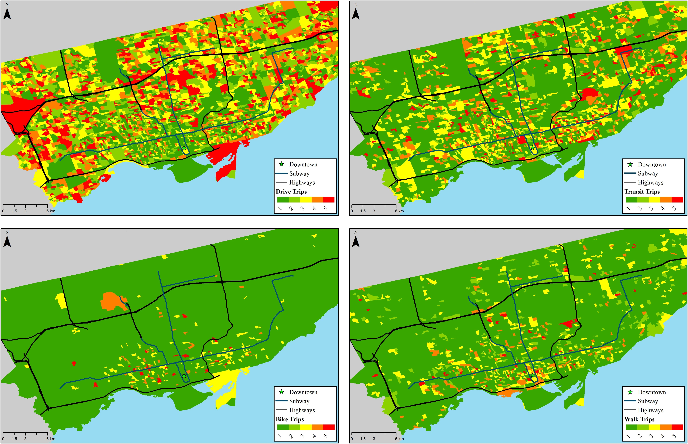
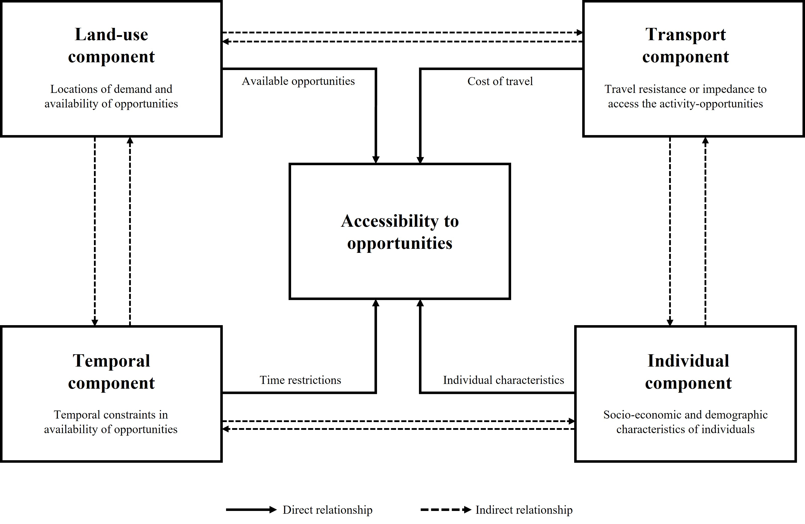
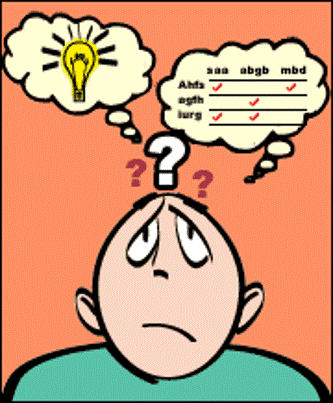
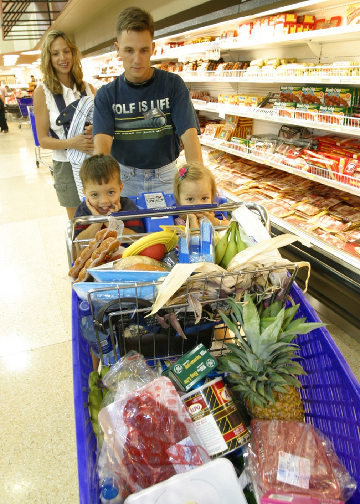
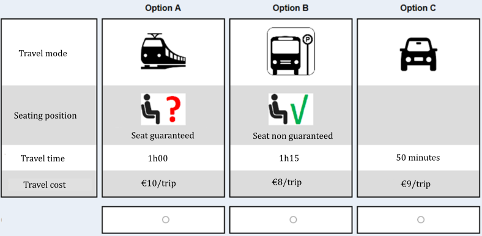
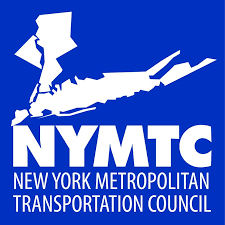

Publications & working papers
My research focuses on residential location modelling, accessibility measurement, discrete choice modelling, and the endogenous relationship between land use and travel behaviour. A central theme is inferring the bi-directional link between where people live and how they travel — drawing on econometric methods, causal inference, and machine learning to understand human activity patterns and decision-making in complex transport and energy systems.







